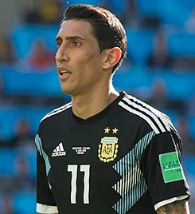

Ángel Fabián di María (Rosario, provincia de Santa Fe, 14 de febrero de 1988) es un futbolista argentino, que juega de extremo derecho e izquierdo en el Paris Saint-Germain de la Ligue 1 de Francia. Es jugador internacional con la Selección Argentina. Di María empezó su carrera en Rosario Central, pero tras un ascenso vertiginoso fue rápidamente traspasado al Benfica de Portugal con solo 19 años en 2007. Con As Águias ganó la Primeira Liga, la primera del club tras cinco años de sequía, y dos Taça da Liga. En 2010, fue fichado por el Real Madrid en una transferencia de 25 millones de euros, donde ganó La Liga y la UEFA Champions League, siendo elegido MVP en la final de esta última que le ganaron al Atlético de Madrid y que le volvería a dar el título a los madrileños tras 12 años. Después ficharía por el Manchester United en 2014 por una transferecia récord de 59.7 millones de euros, pero se fue después de una sola temporada para llegar al Paris Saint-Germain. En Francia, Di Maria ganó cuatro títulos de liga, cinco Copas de Francia y cuatro Copas de La Liga, que incluyen tres cuadrupletes domésticos, y ayudó al club a alcanzar su primera final de la Champions League. Es el octavo máximo goleador del club y el máximo asistente histórico del equipo. A nivel internacional, Di María se formó en las divisiones menores de la Selección Argentina, debutando en el Campeonato Sudamericano sub-20 de 2007. Luego, saldría campeón de la Copa Mundial sub-20 de 2007 y los Juegos Olímpicos de Pekín de 2008, siendo en este último fundamental para la obtención de la medalla de oro al anotar el único gol de la final ante Nigeria. Con la categoría absoluta, Di María debutaría en las Eliminatorias al Mundial de Sudáfrica 2010, y disputaría de tres Copas del Mundo, llegando a la final en la edición de 2014, donde no podría disputar el partido tras lesionarse en cuartos de final. También disputaría cinco Copas América, llegando a la finales de 2015 y 2016, y ganando la edición de 2021 a la anfitriona, Brasil, anotando el único gol de la final, lo que le daría el título a la Argentina.
El 28 de junio de 2010, el Real Madrid publicó en su página web que había llegado a un acuerdo con el Benfica para el traspaso de Di María. Firmó un contrato por cinco años por 25 millones de euros, más 11 millones de incentivos, según anunció un día después el ente regulador de la Bolsa de Valores de Portugal. El 7 de julio de 2010, tras finalizar el Mundial de Sudáfrica, llegó a Madrid directo desde Buenos Aires y pasó su examen médico el 8 de julio de 2010. Su primer partido con el Real Madrid fue un amistoso ante el Club América, que su equipo ganó por 3 a 2. El 22 de agosto, Di María anotó su primer gol en un amistoso contra el Hércules CF, donde su equipo ganó por 3 a 1. En su estreno con el Real Madrid en el Estadio Santiago Bernabéu marcó un gran gol de jugada individual contra Peñarol de Uruguay y su equipo logró ganar el Trofeo Santiago Bernabeu. Su debut en la liga española se produjo el 29 de agosto de 2010 ante el RCD Mallorca. El 18 de septiembre marcó su primer gol oficial con el Real Madrid en la victoria por 2 a 1 ante la Real Sociedad. Diez días más tarde, anotó un gol en la Copa de Europa ante el AJ Auxerre que permitió a su equipo imponerse por 1 a 0. En el partido de vuelta de los octavos de final de la Copa de Campeones hizo el tercer y último gol en la victoria por 3 a 0 ante el Olympique de Lyon y su equipo logró pasar esa instancia por primera vez en 7 años. También anotó contra el Tottenham Hotspur por los cuartos de final, aunque el Real Madrid terminó perdiendo en semifinales con el Barcelona ese año. El 20 de abril, se fue expulsado a los 31 minutos del tiempo extra de la final de la Copa del Rey contra el Barcelona. Sin embargo el Real Madrid ganó 1 a 0 con un gol de Cristiano Ronaldo de cabeza tras un centro de Di María, obteniendo su primer título con el conjunto madrileño. En una encuesta realizada a los lectores del periódico deportivo Marca durante 2010, Di María fue elegido como la mejor incorporación del Real Madrid ese año.
El comienzo de la temporada 2011/12 fue destacable para Ángel ya que durante casi toda la primera vuelta fue uno de los mejores asistidores del Madrid junto a Mesut Özil. Sin embargo una serie de lesiones a finales del 2011 y principios del 2012 le impidieron tener continuidad. A finales de temporada, ya recuperado, volvió a los terrenos y continuó colaborando aunque en menor medida que en la primera vuelta. Terminó la temporada con 7 goles en todas las competiciones y con 13 asistencias en la liga, siendo el 3° mejor asistidor solo por detrás de su compañero de equipo Mesut Özil y su compatriota Lionel Messi. Finalizó la temporada ganando la Liga BBVA que sería recordada como la Liga de los récords por los 100 puntos y 121 goles conseguidos por el Real Madrid, que supusieron un récord en toda la historia de la competición.
La temporada empezó bien para Di María, pues su equipo logró la Supercopa de España al ganarle al FC Barcelona. Ángel hizo uno de los goles del Madrid en el partido de ida al aprovechar un error del portero blaugrana Víctor Valdés: lo presionó cuando tenía la pelota, se la ganó y finalmente la empujó a las redes. Ese gol fue fundamental para el Real Madrid, pues con él llegaron al partido de vuelta con distancia de tan solo un gol. Finalmente el marcador global quedó 4-4 y el Real Madrid ganó el torneo por haber convertido más goles de visitante. Aunque Di María no tuvo la mejor temporada, sí contribuyó en los grandes momentos, entre los que destaca el envío del centro para el gol de Cristiano Ronaldo ante el Manchester United el 13 de febrero. Registró 17 asistencias y marcó 9 goles a lo largo de la temporada en 52 partidos, marcando en particular contra el Atlético de Madrid y el Málaga. El 9 de agosto de 2012 Di María firmó un nuevo contrato con el Real Madrid, manteniéndolo en el club hasta 2018. En la temporada 2013-14, con la adquisión del extremo galés Gareth Bale y debido a decisiones tácticas del nuevo entrenador del club, Carlo Ancelotti, la posición de Di María se cambió de extremo a la de un mediocampista ofensivo, formando un trío en el centro del campo junto a Luka Modrić y Xabi Alonso en una formación 4-3-3. Contribuyó a la victoria 1-2 del club sobre el Barcelona en la final de la Copa del Rey 2014 con el primer gol, y fue el líder de asistencias en La Liga de la temporada, aportando 17. En la final de la UEFA Champions League 2013-14 contra el Atlético de Madrid el 24 de mayo de 2014, durante el tiempo extra en el cual el partido estaba empatado 1-1, Di María regateó a dos jugadores antes de realizar un disparo para la parada del portero Thibaut Courtois. Gareth Bale, estuvo allí para cabecear el rebote en la red en el minuto 110, dando al Real Madrid una ventaja de 2-1 sobre el Atlético en una eventual victoria por 4-1. Di María fue nombrado mejor jugador del partido por la UEFA después del partido, y el ex entrenador del Manchester United, Sir Alex Ferguson, le otorgó el honor. Di María fue un suplente no utilizado cuando el Real Madrid ganó la Supercopa de Europa 2014 contra el Sevilla el 12 de agosto. Una semana después, en el partido de ida de la Supercopa de España, jugó los últimos 15 minutos del empate 1-1 en casa contra el Atlético de Madrid en lugar de Luka Modrić, en el cual fue su última aparición como jugador del Real Madrid. El 22 de agosto fue revelado que Di María no fue incluido en la convocatoria para la vuelta de la Supercopa, con el entrenador del equipo, Ancelotti, revelando que el jugador pidió ser vendido durante el verano.
El 26 de agosto de 2014 se hace oficial su fichaje por el Manchester United en un contrato por cinco años, por 75 millones de euros más 15 millones en conceptos de variables, convirtiendo al jugador en el fichaje más caro en la historia del fútbol inglés. Luego de esto, Di Maria declaró que su salida del club se debió a su poca afinidad con los directivos. Su presentación oficial fue recibida por el director técnico de los "Diablos Rojos" Louis van Gaal en la cual el dieron la legendaria dorsal número 7, que fue usada previamente por leyendas del club como George Best, Bryan Robson, Éric Cantona, David Beckham y Cristiano Ronaldo. Anotó su primer gol el 14 de septiembre, de tiro libre en la victoria por 4-0 sobre el Queens Park Rangers. Además, en ese mismo partido asistió a Juan Mata y fue nominado al "jugador del partido". En el próximo partido contra el Leicester City el 21 de septiembre de 2014, volvió a marcar un gol y proporcionó otra ayuda aunque United perdió el juego 5-3. El 2 de octubre de 2014, Di María ganó al jugador del Manchester United del mes de septiembre después de acumular dos goles y dos asistencias en sus primeros cuatro partidos para el equipo. Di María continuó su racha de buena forma en 5 de octubre de 2014 al anotar un gol y proporcionar una asistencia para el colombiano Radamel Falcao para ayudar a derrotar a Everton 2-1. Di María fue sustituido por una lesión en el bíceps femoral en el minuto 13 en la derrota 3-0 contra el Hull City, el 29 de noviembre y posteriormente hizo una sola aparición de sustituto en los próximos siete partidos. El 4 de enero de 2015, Di María regresó de una lesión para anotar un gol en la victoria por 2-0 contra Yeovil Town en la tercera ronda de la FA Cup. El 11 de enero, Di María fue utilizado como delantero por el gerente de Louis van Gaal, pero no anotó, en una derrota por 1-0 a Southampton. Este nuevo papel llegó en medio de una mala racha de Di María, quien se decía que había luchado desde octubre. Di María fue expulsado el 9 de marzo donde perdieron 2-1 en casa ante el Arsenal en la sexta ronda de la FA Cup, siendo amonestado por simular y por agarrar la camiseta del árbitro Michael Oliver. Terminaría su primera y última temporada con 4 goles en 32 partidos.
El 6 de agosto de 2015 se confirmó su fichaje por el París Saint-Germain tras varias semanas de especulaciones y habiendo sido vinculado a varios otros grandes equipos de Europa. La operación totalizó 63 millones de euros, convirtiendo a Di María en el segundo jugador más caro en la historia de la Ligue 1 y también en el que más dinero ha generado en términos de traspasos entre clubes (€179M). Fue presentado al día siguiente, asignándosele el dorsal número 11. En su primera temporada en el club francés, Di María consiguió el triplete nacional, es decir, la Ligue 1 2015-16, la Copa de la Liga de Francia 2015-16 y la Copa de Francia 2015-16.
En el partido en casa de la fase de grupos de la Liga de Campeones 2016-17 contra el Basilea el 19 de octubre de 2016, Di María anotó el primer gol en el minuto 40 en la victoria por 3-0 del PSG para registrar su primer gol de la temporada. El 19 de noviembre abrió el marcador con su primer gol de la temporada en la Ligue 1 en la victoria en casa por 2-0 ante el Nantes. El 14 de febrero de 2017, Di María anotó un doblete cuando el PSG derrotó al Barcelona por 4-0 en el partido de ida de los octavos de final de la Liga de Campeones en el Parc des Princes. El 1 de abril, marcó en la victoria del PSG por 4-1 sobre el Mónaco en la final de la Coupe de la Ligue 2017. El 8 de mayo de 2018, jugó cuando el PSG ganó 2-0 a Les Herbiers para hacerse con la Copa de Francia 2017-18. En el partido de ida de los octavos de final de la Liga de Campeones de su equipo contra su ex club Manchester United en la temporada 2018-19, Di María sufrió una lesión grave tras una entrada de Ashley Young; sin embargo, se negó a ser sustituido y, en los momentos finales del juego, ayudó al gol de Kylian Mbappé para una victoria por 0-2 en Old Trafford. Finalmente, el PSG perdió 1-3 en el partido de vuelta y fue eliminado en octavos de final por tercera temporada consecutiva. En la fase de grupos de la UEFA Champions League 2019-20, Di María marcó un doblete en la victoria por 3-0 sobre su antiguo club, el Real Madrid, el 18 de septiembre de 2019. El 18 de agosto de 2020, Di María anotó un gol y registró dos asistencias en la victoria por 3-0 en la semifinal de la Liga de Campeones del PSG sobre el RB Leipzig; el club jugó contra el Bayern de Múnich en la final, pero perdió el partido 1–0.